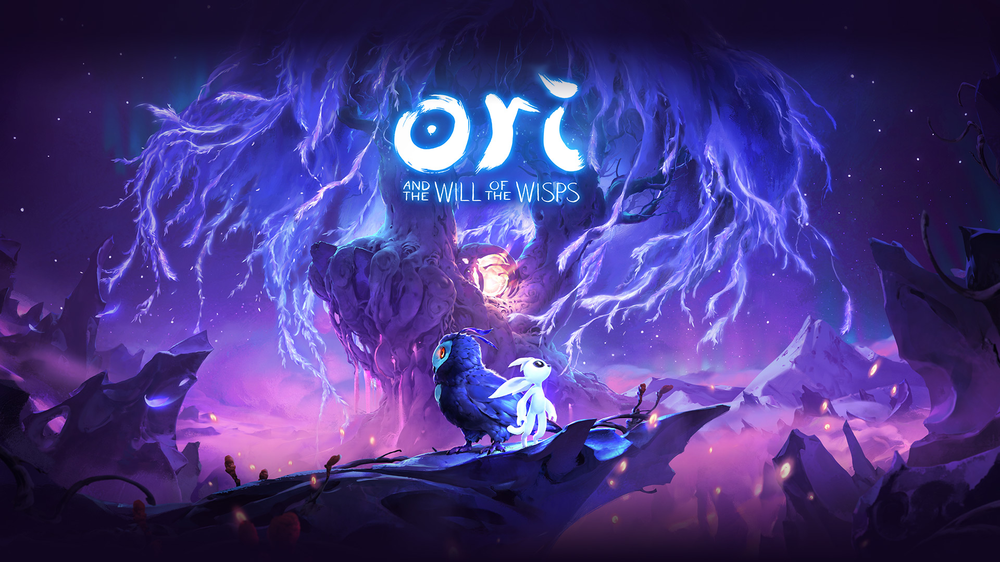
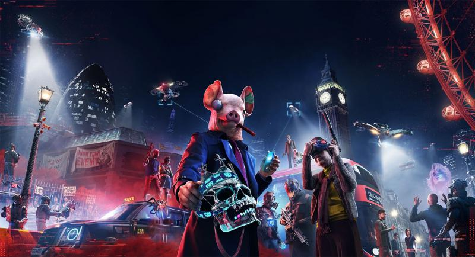
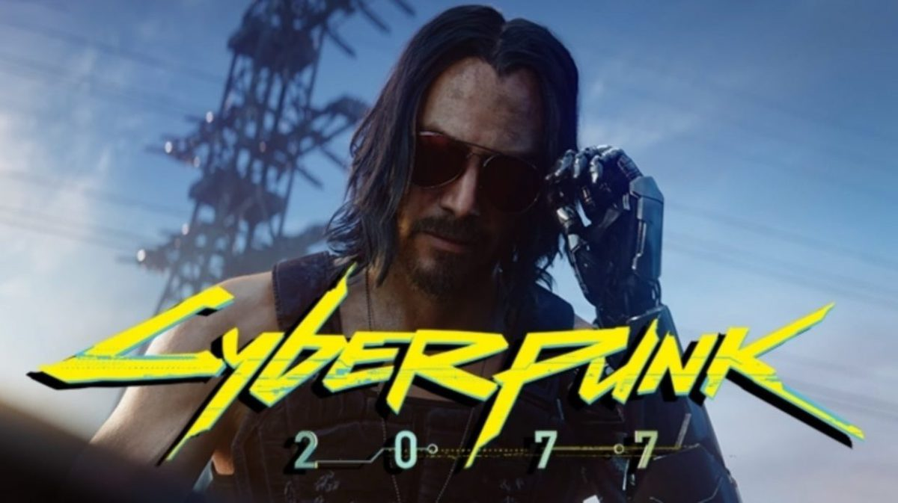

Ори Нару|28.10.2019

История игры завязана на новом приключении духа Ори за пределами леса Нибель, в котором откроется правда о «потерянных», а также об истинном предназначении Ори
Эйден Пирс|28.10.2019

Действие происходит в недалеком будущем. Лондон переживает тяжелые времена... и вам предстоит исправить сложившуюся ситуацию. Создайте сопротивление для борьбы с теми, в чьих руках сосредоточена власть. Но сначала лучше присесть, выпить чаю и все обдумать. Мы же с вами цивилизованные люди!
Киану Ривз|28.10.2019

Игра повествует о приключениях персонажа по имени Ви в дистопичном городе Найт-Сити, расположенном на Западном побережье Северной Америки. Игроку будет предоставлен на выбор ряд игровых классов с возможностью их комбинирования. Игровой мир будет состоять из города, поделённого на шесть уникальных районов, в котором также будет присутствовать полный цикл дня и ночи